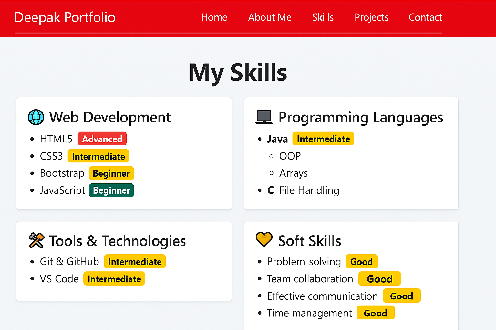
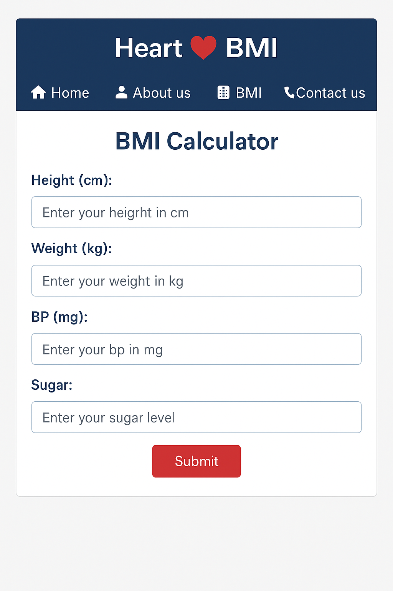
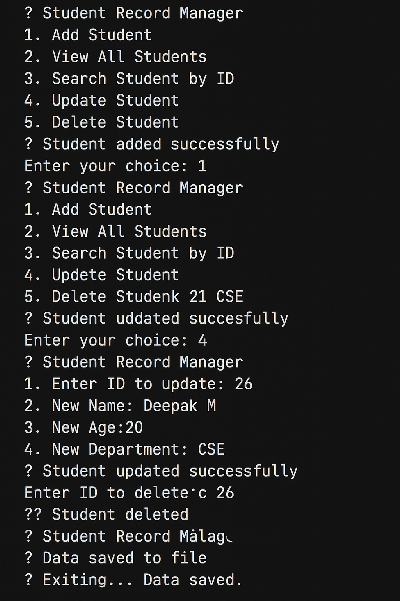
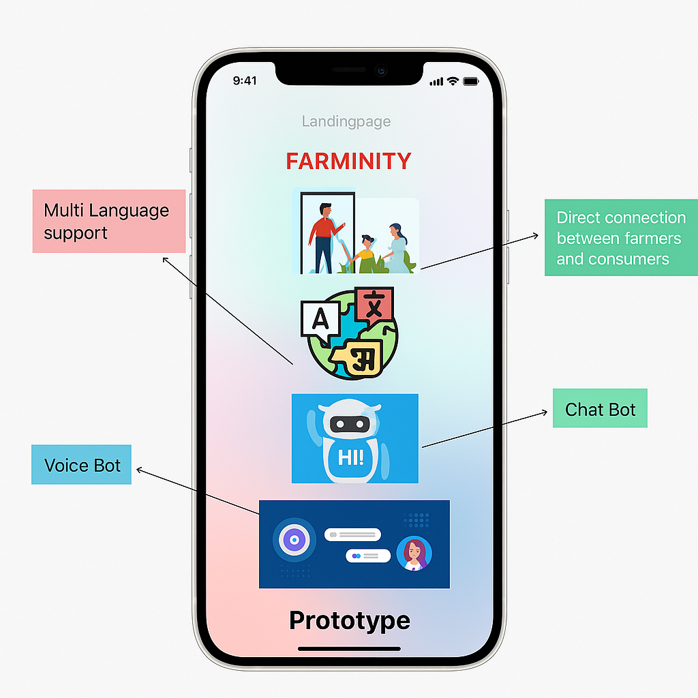
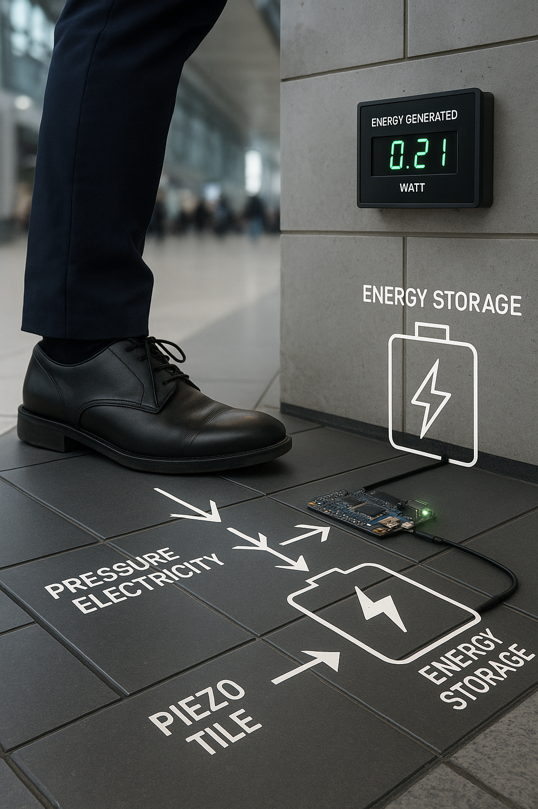
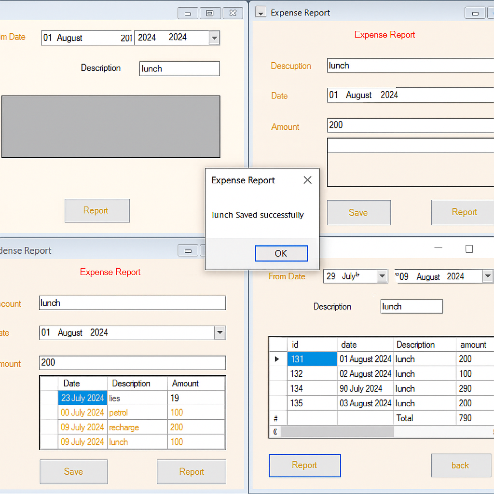

Description: A multi-page responsive portfolio showcasing my background, skills, and contact information.
Technologies Used: HTML, CSS, Bootstrap
This visual displays how each skill category (Web, Programming, Tools, Soft Skills) is cleanly grouped with proficiency badges for clarity.
Description: A responsive web app that calculates Body Mass Index (BMI) based on user input and provides feedback on health status. Designed with simplicity and clarity in mind.
Technologies Used: HTML, CSS, JavaScript
This image showcases the BMI calculator layout with form fields for height, weight, sugar, and BP inputs — allowing users to get instant feedback on their health.
Description: A simple console-based Java application to manage student data using OOP principles.
Technologies Used: Java (OOP, Arrays)
This image displays the console interface of a Java-based Student Management System. Users can add, update, search, and delete student records using a text-driven menu, demonstrating fundamental object-oriented programming concepts.
Description: A smart app prototype built as part of the Smart India Hackathon (SIH), enabling farmers to directly sell products to nearby consumers. Features include chatbot assistance, voice bot interaction with native-language support, and a map interface for delivery tracking.
Technologies Used: HTML, CSS, JavaScript, Firebase (Prototype), Google Maps API, Mock Voice UI
A prototype showcasing multilingual voice and chatbot features with a seamless interface for farmers and consumers.
Description: A research and innovation project funded by my college under the SRIT-RPS scheme, aimed at designing smart flooring tiles that generate electricity from footsteps using piezoelectric sensors. The project is scheduled to begin soon with an allocated fund of ₹15,000.
Technologies Involved: Arduino, Piezoelectric Sensors, Embedded C, Power Storage Units, Battery Management System (BMS), Voltage Regulation Circuitry
A conceptual demonstration of smart floor tiles embedded with piezoelectric sensors that convert footstep pressure into stored electrical energy, displayed in a high-tech public space with real-time monitoring.
Description: Developed a complete expense management system with database integration for storing and managing expense records. Users can input, save, delete, and filter expenses, and generate detailed reports by date or description.
Technologies Used: C#, .NET Framework, SQL Database
A clean and intuitive interface to record, view, and report expenses efficiently, with date filters and summary totals.